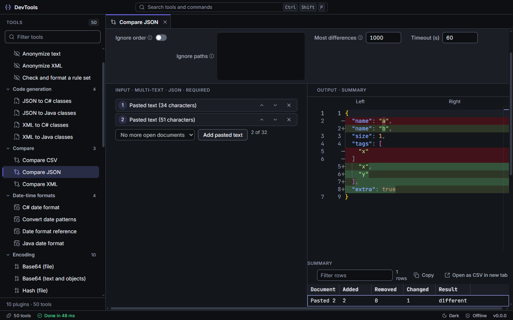
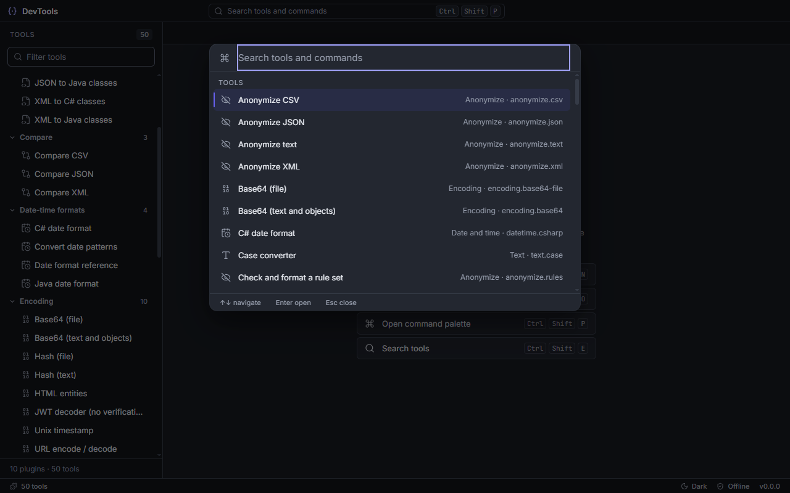

Model Context Protocol · offline · read-only files
Give your AI 50 exact developer tools.
DevTools is a local toolbox: formatting, conversion, code generation, comparison, search,
encoding, date formats, unit conversion and anonymization. Run it as an MCP server and
Claude can call it instead of guessing. Add the skill and it picks the right tool for the job.
You ask"Turn this XML into C# records in namespace Acme.Orders."
The skill routesIt recognises the job and picks codegen__xml-to-csharp with the right options.
The server runs itdevtools mcp runs the tool in a sandboxed worker, on your machine, over stdio.
You get exact outputTested, deterministic results, with errors given a line and column.
Get started
1
Download the server
Download devtools-cli.zip (640 KB) and
unzip it anywhere, for example C:\Tools\devtools-cli. You need
Node.js 22.18 or later (or 24.11+). Nothing else needs installing: the
protocol library is bundled.
Any MCP client that can start a stdio server works. The command is node, and its
arguments are the path of devtools.mjs followed by mcp. Options:
--timeout <ms>, --max-input <size>,
--max-output <size>, --plugins <dir>.
3
Add the skill (recommended)
Download devtools-skill.zip and unzip it
into %USERPROFILE%\.claude\skills (Claude Code), so that you get
skills\devtools\SKILL.md. With it, Claude reaches for DevTools whenever a task fits and
chooses the right tool and options. The source is in
skill/devtools.
Fifty tools are a lot to choose from. The devtools skill gives Claude a routing guide. It
decides from what the input is and what you want out of it, and settles the close calls: structured
compare or text diff, find a value or run JSONPath, Base64 of text or of a file. It also chains
tools when no single one fits, such as YAML → JSON → C#.
Sets the options your request implies: key, rootName, records, time zones
Writes anonymization rule sets for you and validates them first
Passes data exactly and reads results faithfully, with errors given their line and column
Says so when a task is outside DevTools instead of forcing a tool
Try asking
"What changed between before.json and after.json? Match products by sku and ignore lastUpdated."
"Make Java records from this API response, package com.acme.api."
"Mask the phones in customers.csv except the last 2 digits and pseudonymize the emails."
"What's the Java pattern for C# yyyy-MM-ddTHH:mm:ss.fffK? Anything lossy?"
"Decode this JWT and tell me when it expires, in Asia/Jerusalem time."
"Convert 72 °F to Celsius and Kelvin, exactly."
All 50 tools
Tool names as the AI sees them. Claude Code adds the prefix mcp__devtools__.

Compare 2 to 20 JSON, XML or CSV documents, matched by key.

The same catalog, in the desktop app's command palette.
Safe by design
Offline
The server talks only over the stdio pipe to the client that started it. It opens no port, and a
network guard denies TCP, UDP, DNS, TLS and HTTP to every tool.
Read-only files
A tool can read only the exact file path named in the call. Network shares and device names are
refused, and no MCP tool can write a file. The AI client picks the path, so connect it only to a
client you trust with your files.
Sandboxed and bounded
Each call runs in a worker with a time limit and input and output caps: 60 s, 64 MB in and 32M
characters out by default. Errors come back as messages, never as crashes.
Plugins are code
Plugins in your user plugin folder are served too. They are trusted code: install only plugins you
trust.
Questions
Do I need the DevTools desktop app?
No. The MCP server is the command line build (devtools-cli) plus Node.js.
Why does a tool's name have a double underscore?
MCP tool names allow only letters, digits, _ and -, so the . of a tool
id becomes __: json-xml.format-json is json-xml__format-json.
Does it work on macOS or Linux?
The server is plain Node.js and is built and tested on Windows. Other platforms may work, but they are
not tested.
How does the AI give it a large document?
Inline, in the call. Up to 64 MB of text by default. Raise it with --max-input. A message
that is too large gets a clean error, and the server keeps running.